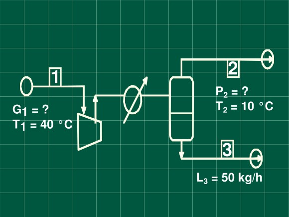

Problema secado

En una mezcla de benceno y nitrógeno, que está a 40 °C y 720 mm de Hg,
la presión parcial del benceno es de 50 mm de Hg. Para separar el 80 %
del benceno presente, la mezcla se somete a enfriamiento y compresión.
Calcule:
- a) La presión final si se enfría hasta 10 º C
- b) El volumen inicial de la mezcla para condensar 50 kg / h de benceno
Consideraciones
Como hay condensación la masa gaseosa quedará saturada a la temperatura final de enfriamiento.
Balance de masa
Total
G1=L3+G2
Parcial de benceno
G1y1=L3x3+G2y2
Ecuaciones para operaciones de vapores con gases
Y1=1−y1y1
GS=G1(1−y1)
(1−y1)GSy1=L3x3+(1−y2)GSy2
GSY1=L3x3+GSY2
L3=GS(Y1−Y2)
G1=GSVH
Cálculos
Humedad inicial
Y1=720−5050⋅2878=0.208 kg nitroˊgenokg benceno
Humedad final
Como se condensa el 80 % del benceno entrante
Y2=0.208(0.2)=0.0416 kg nitroˊgenokg benceno
Presión de vapor de benceno a 10ºC
Constantes de Antoine A = 7.429; B = 1628.32; C = 279.56
logP∘=7.429− 10+279.561628.32=1.8055
P∘=63.9 mmHg
Presión final
Y2=0.0416=PT−63.9163.91∙2878
Benceno condensado por kilogramo de nitrógeno
ΔY=0.208−0.0416=0.1664kg nitroˊgenokg benceno
Volumen húmedo de la corriente
VH=(281+780.208)7607200.082∗313=1.04kg N2m3
Volumen inicial
V=0.1664kg N2kg benceno50 kg dehbenceno(1.04kg N2m3)=312.5hm3 de mezcla
Resultados
La presión final es de 5.716 atm.
Se requieren 312.5m3/h de mezcla para condensar 50kg/h.